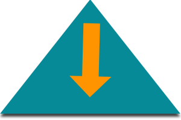

Présentation des métiers de l'IT
Conférence du 7 janvier 2015 @ Supinfo Paris
Vos intervenants
- Lucas CORBEAUX
- Carrel YAKPOVI
- Gaël DEMETTE
Revue du secteur en 2014
Le numérique, vecteur de croissance en France
“Le numérique est [...] un secteur d'avenir. [...] Nous avons déjà des pénuries. Il faut [...] que la formation suive.”
Jean-Christophe Sciberras, président de l’ANDRH
L'informatique, un secteur porteur
- Fort taux d'emploi après un bac +5
- Un salaire honorable
L'informatique, un secteur qui recrute
- 85% d'emploi en 2014 sur la promotion 2013 (Apec)
- 90% d'insertion en 2014 (Apec)
- 90 000 postes prévus entre 2012 et 2022 (CIDJ)
- Ingénieurs et cadres d'étude, recherche et développement en informatique (388a)
- 47 000 € bruts / an (INSEE)
- 94% de CDI (INSEE)
Compétences transverses
Veille technologique
On parle de technologie de l'information.
- Mailing-lists
- Flux RSS
- Presse spécialisée & blogs
Si vous apprenez une actualité à la télévision, il est trop tard.
Le développement
Par Gaël DEMETTE
L'auteur
- Etudiant formateur à Supinfo Paris
- Contributeur opensource
- "Tech enthusiast"
L'architecte logiciel
Contexte
L'architecte est une personne ayant une vision globale du projet, chargée de faire respecter l'architecture logicielle définie, et d'anticiper les problématiques.
Une analyse
L'architecture logicielle est une analyse de comment répondre au besoin.
Des objectifs
- Interopérabilité
- Maintenabilité
- Fiabilité
- Réutilisabilité
- ...
Missions
L'architecte logiciel doit :
- Anticiper
- Améliorer
- Valider
- Eviter de s'isoler (syndrome de la tour d'ivoire)
Scénario
Une équipe doit réaliser une solution de gestion de stocks pour remplacer une solution existante et peu fiable.
Cette gestion des stocks doit pouvoir être manipulée depuis des terminaux mobiles dans les entrepots de la société.
Une vision globale
L'architecte logiciel connait l'existant, et les besoins.
L'architecte logiciel va analyser les besoins d'intéropérabilité avec l'existant afin d'éviter le passage brutal à la nouvelle solution
Il va trancher les patterns architecturaux (3 tiers/4 tiers) mais également proposer des solutions d'intégration continue
Le développeur

Contexte
Le développeur créé des algorithmes régissant le comportement d'un logiciel, à partir d'un cahier des charges.
Missions
- Prototypage
- Conception
- Tests
- Maintenance
- ...
Scénario
On demande à une équipe de développeurs de concevoir un progiciel de gestion intégré.
Au delà de la conception
L'équipe va éliminer toutes les inquiétudes techniques avant de s'atteler à la conception du logiciel. Elle va ensuite proposer des moyens de test de l'application. Enfin, elle fera la maintenance applicative de la plateforme.
L'administrateur de bases de données (DBA)

Contexte
Le DBA est responsable du modèle de données d'une entreprise
Missions
- Concevoir la structure d'une base de données
- Concevoir le modèle d'accès aux informations (Couche modèle d'une application)
- Dimensionner l'infrastructure
- Faire du fine-tuning
- Gérer l'intégrité et la sécurité des données
- ...
Scénario
Une société prépare une application de type réseau social à fort trafic, elle charge un administrateur de bases de données de suivre ce projet.
Un pont entre développement et infrastructure
Le DBA créé le modèle conceptuel de données. Il épaule les développeurs dans la création de la couche Model de leur application. Il gère les accès des différents utilisateurs de la base de données. Il mets en place des procédures d'audit et de backup. Il va prévoir la montée en charge des serveurs de base de données, pour dimensionner l'infrastructure et faire du fine tuning des serveurs de base de données.
L'intégrateur (ou front-end dev)

Contexte
L'intégrateur est chargé reproduire les maquettes du graphiste en interface logiciel
Missions
- Conseil et valide les maquettes
- Gère la compatibilité de l'interface
- Produit les éléments graphiques de l'interface
- Optimise l'accessibilité de l'interface
- Optimise le référencement de l'interface (web)
- Gère l'animation de l'interface
Scénario
L'intégrateur travaille avec le graphiste pour concevoir le nouveau design d'une application web.
Pas seulement un codeur
L'intégrateur valide la faisabilité des éléments graphiques et conseil par son expérience d'UI/UX. Il va ensuite traduire cette interface en code, en s'assurant de la compatibilité entre les différents navigateurs. En ajoutant des éléments liés à l'accessibilité et au référencement.
Le développeur "Full-Stack"
Contexte
Le développeur dit full-stack suit le développement complet d'une application, des étapes de préconception au déploiement.
Missions
Le développeur full-stack est capable de toutes les missions des autres corps de métier du développement à l'administration.
Scénario
Vous devez développer une application mobile de gestion d'évenements.
Un travail de bout en bout.
Le développeur full stack réfléchit aux besoins du client et de l'utilisateur afin de cibler la logique métier. Il modélise les données lui-même, ainsi que l'architecture applicative. Il conçoit l'expérience et l'interface utilisateur. Il déploie et dimensionne son application.
Le data scientist
Data Scientist (n.): Person who is better at statistics than any software engineer and
better at software engineering than any statistician.
— Josh Wills (@josh_wills)
3 Mai 2012
Contexte
"Data Scientist" - © William Cleveland, 2001
Le data scientist travaille sur un énorme volume de données provenant de plusieurs sources afin d'en faire resortir des indicateurs concrets pour la stratégie et l'opérationnel d'une entreprise.
Missions
Comprendre les comportements et adapter sa solution logicielle
Scénario
Le responsable marketing fait appel à vos services pour améliorer une plateforme de e-commerce.
Une recherche multi canaux
Le data scientist, à la différence du data analyst, a une capacité de synthèse, via des outils numériques, de différentes sources de données. Il croise les données provenant de la plateforme et de ses différents canaux de diffusion avec des sources d'open data et en fait ressortir les produits à mettre en avant suivant les données personnelles d'un utilisateur.
Le Developpeur-Opérateur

Contexte
Le devops utilise ses compétences en développement pour mettre en place des automatismes de déploiement de machines ou de solutions logicielles.
Missions
- Réduire la friction opérationnel <-> développement / stabilité <-> agilité
- Préparer une mise en production logicielle ou matérielle
- Gérer un parc de machines comme un lot
- Maintenir un déploiement non-incrémental
- Aimer Docker
- ...
Scénario
Le DevOps doit mettre à niveau le parc logiciel avec la dernière version d'un logiciel donné, et préparer le déploiement de 200 machines avec ces mêmes logiciels
Au centre : une gestion de la configuration
Le DevOps va décrire dans son outil de gestion de configuration la nouvelle configuration de ses machines. Il va lancer le déploiement des nouvelles machines qui vont s'installer jusqu'à atteindre le niveau de la configuration.
Le management d'équipe technique
Par Lucas CORBEAUX
L'auteur
- Développeur autodidacte
- Manager autodidacte
- Entrepreneur autodidacte
Petit refactoring
var autodidactize = function(skill, i, skills) {
skills[i] = skill.concat(' autodidacte');
};
var skills = ['Développeur', 'Manager', 'Entrepreneur'];
skills.forEach(autodidactize);
Manager : qu'est-ce que c'est ?
Obtenir de ses collaborateurs
- Des résultats
- De l'engagement
- Un numéro de carte bleue
- Un numéro de carte bleue
Management top-down
- Le management décide des objectifs et des moyens
- L'équipe produit, et c'est tout
- Forte prévisibilité, faible innovation, pas d'engagement des équipes
Management bottom-up

- Le management décide des objectifs
- L'équipe réfléchit aux meilleurs moyens possibles
- Le management alimente la réflexion et tranche la décision
- L'équipe produit
- Équipes innovantes, productives, engagées mais moins de visibilité
Devenir manager
- Savoir être un facilitateur
- Comprendre ce que les autres font
- Savoir que si ils font différemment ce n'est pas forcément moins bien
- Apprendre à lâcher prise
- Oublier le plan de carrière : tirer partie des opportunités
Le rôle de CTO
Le CTO en startup
Une startup qu'est-ce que c'est ?
A startup is a temporary organization designed to search for a repeatable and scalable business model
Steve Blank
En gros et en résumé :
- Une structure temporaire
- Qui fluctue énormément
- Foncer dans le mur en espérant le convaincre de bouger avant l'impact
Le CTO des premiers mois
Le starter
Vous avez une idée géniale, pas de bol vous êtes le seul à le savoir.
Il va falloir la concrétiser très vite.
Il va falloir :
- Choisir des technos sans trop savoir ce que l'on va produire au final
- Prototyper très vite
- Itérer encore plus vite sur le prototype de base
Votre associé à une idée géniale : un SaaS de stockage de fichiers.
Vous êtes super fier de votre système d'upload : vous y avez passé la semaine.
Et 3h passées sur un graph d'occupation d'espace disque pour le fun.
Deux semaines plus tard les retours clients sont unanimes : personne ne veut de votre solution de stockage.
Par contre on souhaite vous acheter votre produit pour mesurer l'occupation d'espace disque.
Et les clients veulent voir un prototype demain.
Le CTO de la croissance
Le builder
Vous avez survécu aux deadlines des premiers mois, validé vos premières idées et levé des fonds.
Maintenant il faut que le produit évolue vite, tout en accueillant plus de monde.
C'est l'heure de rendre tout ça scalable :
- Recruter une équipe
- Poser les bases du workflow
- Adapter les technologies aux besoins de performances
Vous voyez ce jour en entretien un lead dev.
Ça tombe bien, la qualité commençait à chuter.
Et vous êtes trop occupé à trouver une solution pour que le serveur encaisse 3 fois plus de requêtes par seconde d'ici deux semaines...
Le CTO de la startup successful
L'executive
Votre startup compte désormais 200 salariés et votre solution de monitoring est utilisée par plus de 10000 clients.
C'est bien, mais le marché se réduit de jour en jour, il va falloir augmenter les marges...
... et donc, réduire les coûts.
C'est l'heure de l'optimisation :
- Réduire les coûts là où c'est possible...
- ...en externalisant ce qui coûte trop cher en interne...
- ...mais surtout en internalisant ce que l'entreprise sait faire.
Vos objectifs cette année sont d'économiser 200000$ sur les coûts de fonctionnement sans compromettre la qualité de service.
Notre compétence en gestion d'espace disque nous permettrait d'économiser 80000$ par an en l'internalisant.
D'ailleurs nos lead dev sont devenus très bons...
...tellement bons que leur équipes n'ont plus autant besoin d'eux pour avancer.
Vendre leur compétence d'expert nous rapporterait 120000$ par an supplémentaire, sans impacter nos projets.
Le CTO dans une entreprise
Votre entreprise a déjà son historique, ses process, sa culture propre.
Et généralement sa priorité est de continuer à faire évoluer ses produits rapidement.
Tout en limitant les coûts...
Entre innovation et conservatisme
- Aller vers l'innovation...
- ...mais pas trop vite
Vos plannings projets sont très chargés...
Mais vous avez identifié que votre antique CVS était un frein majeur.
La revue par les pairs prends aussi trop de temps, il faut l'optimiser.
Vous allez y aller progressivement. Les chantiers commenceront dans 2 mois et finiront l'année prochaine.
Devenir CTO
Créer sa boîte
Rejoindre une entreprise en croissance
...ou un nouveau service
Devenir CTO à la place du CTO
Plus simple si le CTO a une voiture et que vous connaissez un mécanicien discret Plus simple si le CTO a une voiture et que vous connaissez un mécanicien discretMerci à tous